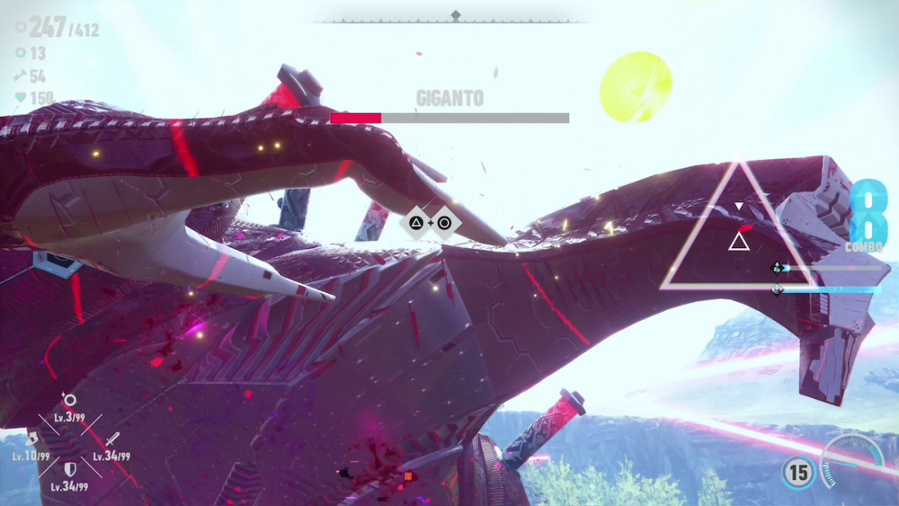
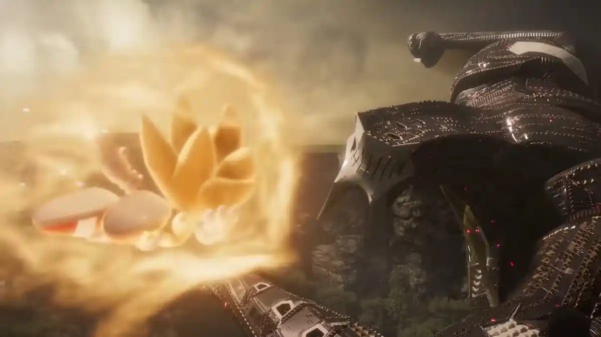

"Undefeatable (feat. Kellin Quinn)" úr Sonic Frontiers (2022)
Hér vann Tomoya saman með rokkhljómsveit að nafni Sleeping with Sirens. Textinn var saminn af þremur mönnum: Tyler Smith, sem hefur unnið við Sonic leikina áður, Julian Comeau, sem er söngvarinn á hljómsveit að nafni Loveless, og Kellin Quinn, söngvaranum í Sleeping with Sirens. Þetta þríeiki samdi líka textann fyrir 2 önnur lög í leiknum, Break Through It All og Find Your Flame.
Þegar ég frétti að því að hljómsveitin Sleeping with Sirens hafði unnið með Tomoya við að gera þessi þrjú lög ákvað ég að hlusta á þau til að sjá hvort öll lögin þeirra væru svona góð. Því miður fannst mér eiginlega öll lögin þeirra sökka sem er fyndið því að þau voru geðveik þegar þau voru að vinna með Tomoya og félögum.

Hvenær heyrist lagið?
Þetta lag spilar þegar Sonic þarf að berjast við geysiöflugann risa að nafni Giganto. Sonic þarf að ná í sjö Chaos Emeralds til að geta bjargað vinum sínum en sá sjöundi er á hausnum hans Gigantos, þannig að Sonic þarf að klifra upp hann fyrst! Þegar Sonic er búinn að ná í þann sjöunda getur hann breyst í Super Sonic, sem er öflugri, hraðari og sterkari útgáfa af honum sjálfum. Super Sonic er eiginlega ódrepanlegur og getur þar að auki flogið, en hann getur ekki viðhaldið forminu endalaust þannig að spilarinn verður að sigra Giganto áður en tíminn rennur út!
Bardaginn er alveg epískur og spilarinn fyllist af adrenalíni þegar hann berst við þennan risastóra andstæðing! Super Sonic getur notað allskonar mismunandi árásir gegn Giganto, og hann getur auk þess vikið sér undan árásir, eða notað Parry tæknina til þess að breyta vörn í sókn!
Giganto er þó ekki eini risinn sem Sonic þarf að berjast við. Eftir að Sonic sigrar Giganto eru þrír risar í viðbót sem bíða hans...


Texti:
I'm hanging on to the other side
I won't give up 'til the end of me
Welcome to the mind of a different kind
Where we've been growing slowly
Think I'm on eleven, but I'm on a nine
Guess you don't really know me
Running from the past is a losing game
It never brings you glory
Been down this road before
Already know this story
Face your fear
It's time to face your fear
Cause when your time has come and gone
I'll be the one to carry on and
You can throw me to the wolves
Cause I am undefeatable
I'm hanging on to the other side
I won't give up 'til the end of me
I'm what you get when the stars collide
Now face it, you're just an enemy
(woah, woah) You're crossing the line
(woah, woah) Now we've run out of time
(woah, woah) I'll take what is mine
And when the story ends
It becomes a part of me
I've given what it takes
I'll find another way
I used to never know
But now it's crystal clear
This feeling's just a ghost
It's time to face your fear
Cause when your time has come and gone
I'll be the one to carry on and
You can throw me to the wolves
Cause I am undefeatable
I'm hanging on to the other side
I won't give up 'til the end of me
I'm what you get when the stars collide
Now face it, you're just an enemy
I'm hanging on to the other side
I won't give up 'til the end of me
I'm what you get when the stars collide
Now face it, you're just an enemy
Welcome to the mind of a different kind
We've been growing slowly
Think I'm on eleven, but I'm on a nine
Guess you don't really know me
Running from the past is a losing game
It never brings you glory
Been down this road before
Already know this story